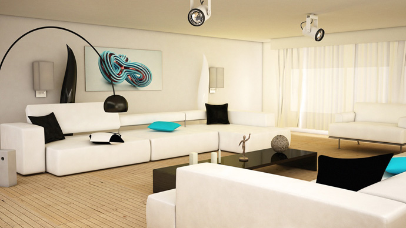
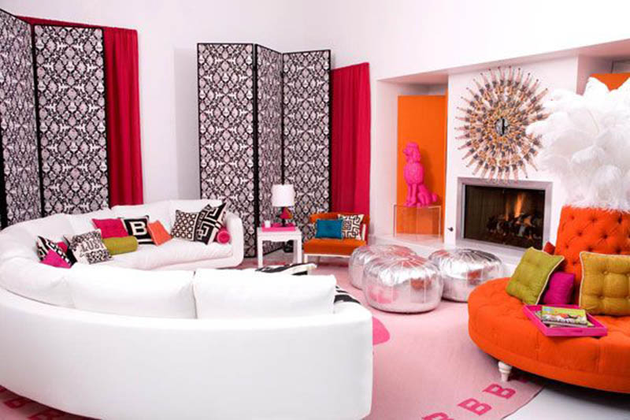
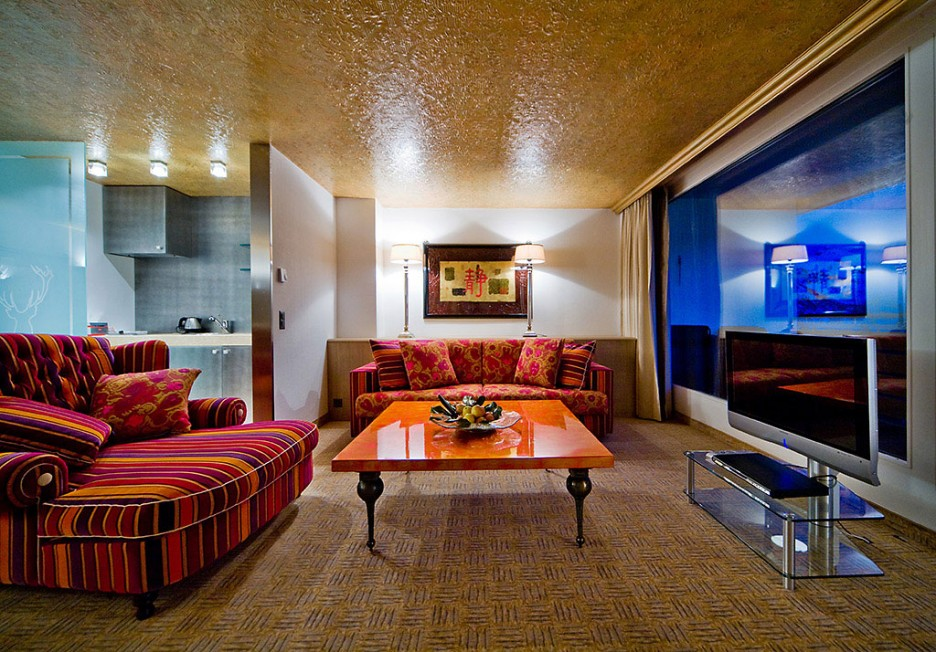
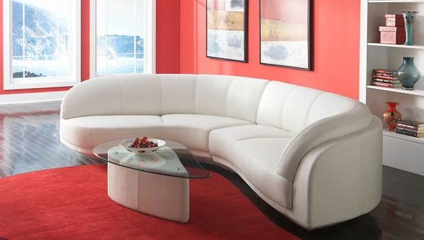

The right bedroom furniture helps you create a comfortable and inviting space that is critical to enjoying a good night's rest and a relaxed state of mind. It's what helps you create the beautiful, restful sanctuary you desire and deserve. After all, it is the room where you will likely spend at least one-third of each day, and by extension, about a third of your life. When pondering bedroom ideas for your home, take a moment to think about the items, colors and themes that inspire you and calm you, for your bedroom should provide both a soothing ambience for sleeping in and a refreshing one to wake up to. Achieving this balance can be tricky, but our selection of bedroom furniture for every kind of bedroom will make it easier.

Several factors determine the right furniture choices for your bedroom. These may range from the size of your room to your lifestyle. The key is to identifying the top influencers in your space. The scale of your bedroom furniture, for instance, may be crucial in a small room. You would need bedroom ideas and furnishings that create the illusion of a larger room, such as a bed with high posters or a large vanity mirror. The first task would be to measure your bedroom and also each individual section where you wish to place furniture and ensure you find appropriately sized pieces for your space.

Your decorating style and preferred color palette are just as important. We offer bedroom furniture in a range of materials, finishes and styles so you can pick the perfect pieces to match your taste. When looking for a bed, for example, you can choose from platform beds made of hardwood to metal and upholstered beds in a number of colors and styles. Headboards range from custom upholstered with a number of fabric choices to those crafted of wood. We take great care to pick out pieces that will help you create that refreshing yet relaxing bedroom of your dreams, so all you have to do is choose a size and style that fits your need.

Then there is the timeless dilemma of choosing between a bedroom set and an eclectic mix of bedroom furniture. There is more than one way to create a cohesive look. While a bedroom set with matching pieces makes the job easier, you can also achieve a cohesive concept by carefully selecting pieces in coordinating but different finishes, styles or colors. When choosing individual pieces of bedroom furniture, you always have a broader choice, be it your seating options or bedroom cabinets. It may take a little more time, thought and effort, but the results will be well worth it.

Whether your preferences lean towards the traditional or contemporary, and whether you like bedroom furniture in identical finishes and styles or prefer to mix and match your pieces, you can be sure of one thing: you couldn't be looking in a better place. Discover inspiring bedroom ideas, a wide variety of bedroom furniture and a blend of fabulous styles as you browse our selection.